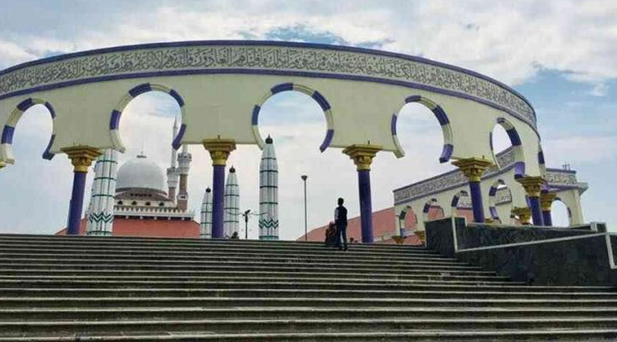

Untuk membantu dalam menyelesaikan Challenge, lakukan aktivitas berikut secara berkelompok.
Masjid Agung Jawa Tengah merupakan masjid terbesar yang berada di provinsi Jawa Tengah, terletak di kota Semarang. Banyak wisatawan yang mengunjungi Masjid Agung Jawa Tengah untuk melakukan ibadah ataupun melihat-lihat keindahan arsitektur masjid.
Banyaknya pengunjung Masjid Agung Jawa Tengah membuat himbauan bagi pemerintah untuk menyediakan fasilitas yang memadai untuk segala kalangan. Sebagai bentuk kepedulian terhadap orang yang memakai kursi roda, pemerintah kota Semarang berencana akan membangun tangga darurat untuk orang-orang yang memakai kursi roda. Kriteria dari tangga darurat tersebut adalah sebagai berikut.
a. Memiliki tinggi 1,2 meter.
b. Kriteria kemiringan jalan tidak boleh melebihi 0,15.
Berapakah panjang lantai dasar terpendek agar pemerintah dapat membuat jalur yang aman untuk pengguna kursi roda?